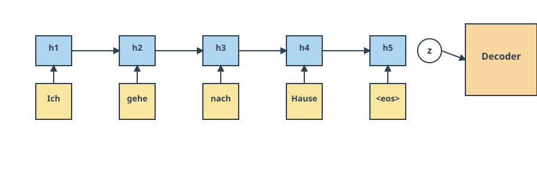
AD698 - Applied Generative AI
Transformers, Attention, and Context
Nakul R. Padalkar
Boston University
March 12, 2024
How to print Revealjs slides

Attention Mechanism and Transformers
From Classic Deep Learning to the Edge of Its Limits
- The 2010s: Deep Learning’s First Boom
- Breakthroughs driven by MLPs, CNNs, and RNN/LSTMs
- Architectures changed little from their 1980s–1990s origins
- Gains came mostly from:
- GPUs + parallel computing
- Massive datasets + cheap storage
- Training innovations (ReLU, batch norm, dropout, residuals, Adam)
- Breakthroughs driven by MLPs, CNNs, and RNN/LSTMs
- Why These Models Plateaued
- CNNs dominated vision; LSTMs dominated NLP
- Thousands of alternative architectures proposed, but few displaced the classics
- Progress felt like scaling, not rethinking
- By mid‑2010s, the field was primed for a new architectural paradigm
- CNNs dominated vision; LSTMs dominated NLP
The Transformer Era
- Originally added to encoder–decoder RNNs for machine translation
- Allowed models to focus selectively on different input tokens
- Replaced the “single compressed vector” bottleneck
- Enabled differentiable, learnable weighting over the entire input sequence
- Transformers: The Architectural Breakthrough
- Vaswani et al. (2017): no recurrence, all attention
- Rapidly outperformed RNNs across NLP tasks
- Became the foundation for large-scale pretraining (BERT, RoBERTa, GPT‑2/3)
- Expanded beyond NLP:
- Vision Transformers (image recognition, detection, segmentation)
- Speech, reinforcement learning, graph neural networks
- Vaswani et al. (2017): no recurrence, all attention
The New Landscape
- Transformers + large-scale pretraining → foundation models
- Default approach: start with a pretrained Transformer, fine‑tune for downstream tasks
- Represents a true architectural shift, not just bigger models
Why Attention? A Human Translation Story
Why Attention? A Human Translation Story
- When we translate a sentence, we don’t memorize the entire thNew chating at once.
- We look back and forth, focusing on the specific words we need at each moment.
- Early sequence‑to‑sequence models (Sutskever et al. 2014) didn’t do this.
- The encoder read the whole sentence once, compressed it into a single vector, and handed that to the decoder.
- The decoder then tried to generate the entire translation from that one vector.
The Problem With Single‑Vector Encodings
- Compressing a long, information‑rich sentence into one vector is a bottleneck.
- RNNs struggle to retain all details, especially for long sequences.
- Even improved architectures (Kalchbrenner et al., 2014; Yang et al., 2016) only partially help.
- The decoder has no way to “look back” at specific words.
- This mismatch between human translation and RNN translation motivates a new idea.
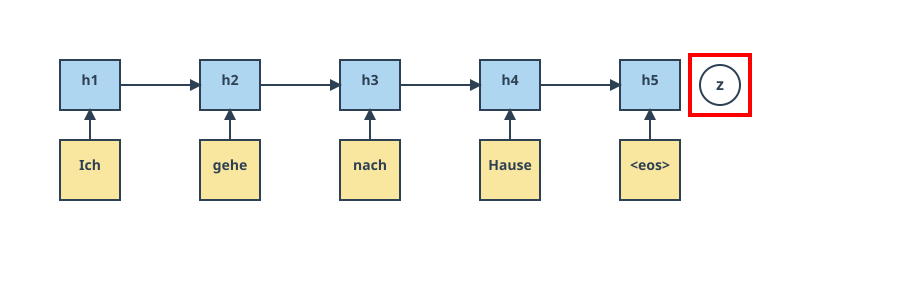
The Key Insight: Focus Selectively
- Humans translate by focusing on different input words at different times.
- At each decoding step, we implicitly form a distribution over the input words:
- some words matter a lot,
- some matter a little,
- some don’t matter at all.
- some words matter a lot,
- Ideally, the decoder should receive only the relevant information for the word it is about to produce.
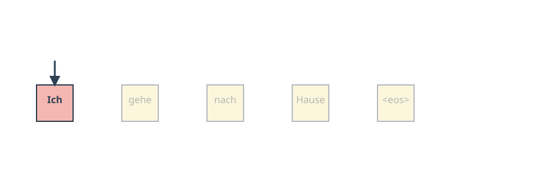
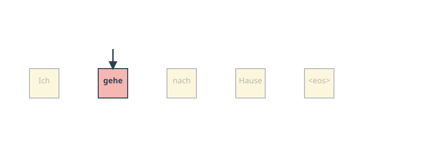
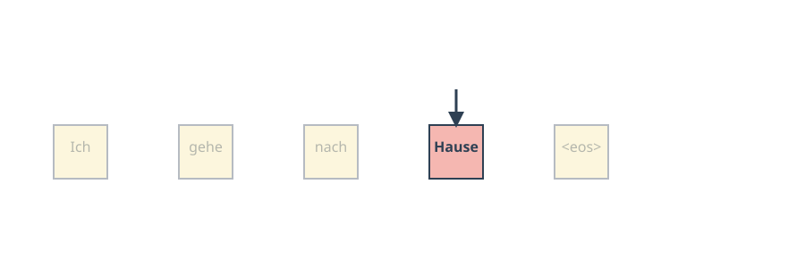
From Human Intuition to a Formal Mechanism
- Bahdanau et al. (2014) formalized this intuition:
- Treat the encoder outputs as a set of key–value pairs
(\mathbf{k}_i, \mathbf{v}_i).
- At each decoding step, compute a query \mathbf{q}.
- Compare the query to each key to produce attention weights
\alpha(\mathbf{q}, \mathbf{k}_i).
- Use these weights to form a weighted sum of values:
\text{Attention}(\mathbf{q}, \mathcal{D}) = \sum_i \alpha(\mathbf{q}, \mathbf{k}_i)\mathbf{v}_i.
- Treat the encoder outputs as a set of key–value pairs
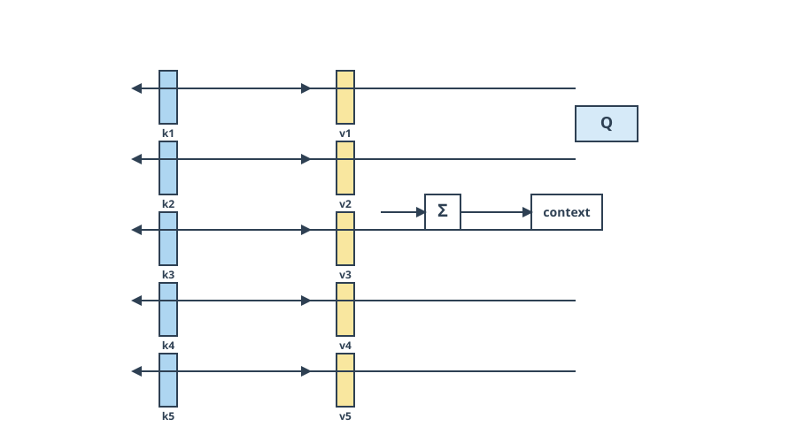
Why Queries, Keys, and Values Work So Well
This mechanism has several powerful properties:
- Works for any input length — no architectural changes needed.
- The “program” (the query) is small, but it operates over a large state space.
- The model learns what to retrieve and how strongly.
- Special cases include:
- exact lookup (one weight = 1),
- uniform averaging,
- convex combinations (soft attention).
- exact lookup (one weight = 1),
- Softmax normalization ensures weights are nonnegative and sum to 1.
The Bridge to Transformers
- Once we have queries, keys, and values, we can drop recurrence entirely.
- Vaswani et al. (2017) showed that attention alone can model all relationships in a sequence.
- This leads directly to the Transformer architecture.
- Q/K/V attention becomes the fundamental building block for:
- machine translation,
- language modeling (GPT‑2/3),
- masked language modeling (BERT),
- vision transformers,
- speech, RL, and graph models.
- machine translation,
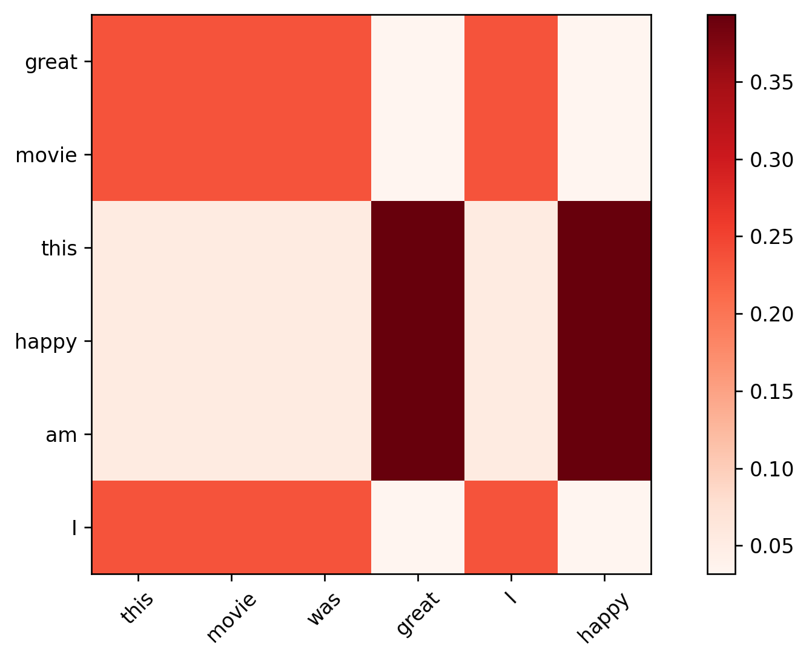
Attention Pooling by Similarity
Motivation: Why Attention Pooling?
- Before Transformers, attention already existed in classical statistics
- Nadaraya–Watson regression is one of the earliest “attention‑like” mechanisms
- It uses similarity between a query and keys to compute a weighted average of values
- This gives us a clean bridge from classical kernels → modern attention
The Core Idea
- This is attention pooling in its purest form
- No training, no parameters, no deep nets
- Just:
- Compute similarity
- Normalize
- Weighted sum
- Compute similarity
f(q) = \sum_i v_i \frac{\alpha(q, k_i)}{\sum_j \alpha(q, k_j)}
Kernels as Similarity Functions
\alpha(q, k) = \begin{cases} \exp(-\|q-k\|^2/2) & \text{Gaussian} \\ 1 & \text{if } |q-k| < 1 \\ \max(0, 1 - |q-k|) & \text{Epanechikov} \end{cases}
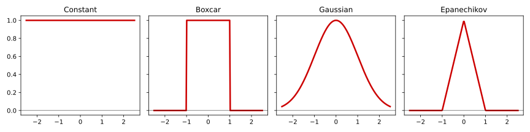
Generating Synthetic Data
- A simple nonlinear function
- Add noise to simulate real data
- We’ll use kernel regression to approximate it
Nadaraya–Watson Attention Pooling
- Each validation point is a query
- Each training point is a key–value pair
- The normalized kernel weights are attention weights
Regression Results
- All kernels except “constant” produce reasonable fits
- Gaussian is smoothest
- Boxcar is sharpest
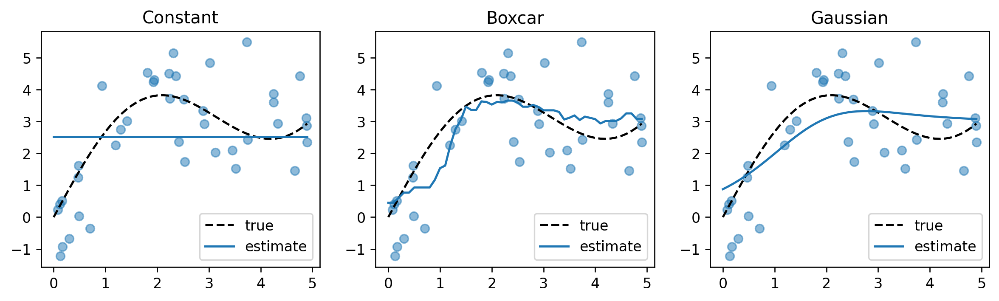
Attention Weights as Heatmaps
- Each column = a query
- Each row = a training point
- Bright = high attention weight
- Gaussian, Boxcar, Epanechikov → very similar patterns
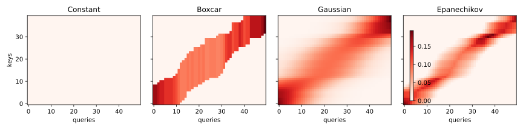
Kernel Width Matters
- Narrow kernels → sharp, local attention
- Wide kernels → smooth, global attention
- Small \sigma → attention collapses to nearest neighbors
- Large \sigma → attention spreads across many points
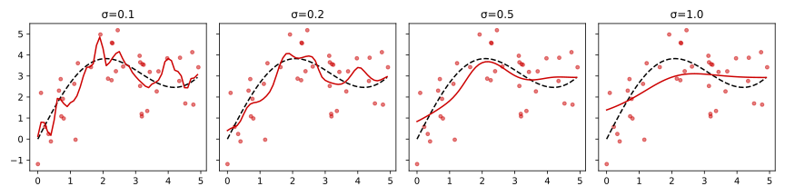
Why This Matters for Transformers
- Nadaraya–Watson is a precursor to modern attention
- Same structure:
- similarity → softmax → weighted sum
- similarity → softmax → weighted sum
- But:
- kernels are hand‑crafted
- representations are fixed
- no learning
- kernels are hand‑crafted
- Transformers replace kernels with learned Q/K/V projections
Motivation for Attention Scoring Functions
Goal: Understand how we compute the compatibility between a query and a set of keys.
- Attention pooling requires a score a(q, k_i) for each key.
- These scores determine how much each value contributes to the output.
- We want scoring functions that are:
- computationally efficient
- numerically stable
- expressive enough to model interactions
- computationally efficient
- Two dominant families:
- Dot‑product attention
- Additive attention
From Distance Kernels to Learnable Scoring
- Context: Earlier, we used Gaussian kernels to model similarity.
- Issue: Distance computations are more expensive than dot products.
- Terms depending only on q cancel out after softmax normalization.
- Layer normalization often keeps \|k_i\| roughly constant.
- This motivates dropping norm‑dependent terms and focusing on dot products.
- Terms depending only on q cancel out after softmax normalization.
Dot‑Product Attention
- Measures alignment between query and key.
- Works best when q and k_i have similar scale.
- If q, k_i \in \mathbb{R}^d with i.i.d. components, \mathrm{Var}(q^\top k_i) = d.
- Large d → large variance → unstable softmax.
a(q, k_i) = q^\top k_i
Scaled Dot‑Product Attention
- Fix: Rescale by 1/\sqrt{d}.
- Keeps logits in a stable range.
- Prevents softmax from saturating.
- Used in Transformers and nearly all modern architectures.
\begin{align} a(q, k_i) = \frac{q^\top k_i}{\sqrt{d}}\\ \alpha(q, k_i) = \mathrm{softmax}(a(q, k_i)) \end{align}
Batched Scaled Dot‑Product Attention
- For queries Q \in \mathbb{R}^{n \times d}, keys K \in \mathbb{R}^{m \times d}, values V \in \mathbb{R}^{m \times v}:
\begin{align} \mathrm{Attention}(Q, K, V) = \mathrm{softmax}\!\left(\frac{QK^\top}{\sqrt{d}}\right)V \end{align}
Masked Softmax
- NLP sequences have variable lengths.
- Padding tokens should not contribute to attention.
- Mechanism:
- Replace padded positions with a large negative value (e.g., -10^6).
- After softmax, these positions contribute zero.
- Replace padded positions with a large negative value (e.g., -10^6).
Additive Attention
- Dot‑product attention requires q and k_i to have the same dimension.
- Additive attention handles mismatched dimensions naturally.
- A small MLP computes compatibility.
- Often used in early seq2seq models (Bahdanau attention).
\begin{align} a(q, k_i) = w_v^\top \tanh(W_q q + W_k k_i) \end{align}
Comparing Dot‑Product and Additive Attention
– Dot‑Product Attention - Fast (matrix multiplications)
- Scales well to large models
- Standard in Transformers
- Additive Attention - More flexible with dimensionality
- Slightly more expensive
- Historically important in seq2seq models
When to Use Which Scoring Function
- dot‑product attention when:
- Query and key dimensions match
- You need speed and scalability
- You’re building Transformer‑style models
- Query and key dimensions match
- additive attention when:
- Query and key dimensions differ
- You want a more expressive scoring function
- Model size is small enough that cost is negligible
- Query and key dimensions differ
Summary
- Attention scoring functions compute compatibility between queries and keys.
- Scaled dot‑product attention is the default in modern architectures.
- Additive attention is more flexible but slower.
- Masked softmax is essential for variable‑length sequences.
- Efficient implementations rely on batch matrix multiplication.
References
Bahdanau, D., Cho, K., and Bengio, Y. 2014. “Neural Machine Translation by Jointly Learning to Align and Translate,” ArXiv:1409.0473.
Sutskever, I., Vinyals, O., and Le, Q. V. 2014. “Sequence to Sequence Learning with Neural Networks,” in Advances in Neural Information Processing Systems, pp. 3104–3112.
Vaswani, A., Shazeer, N., Parmar, N., and others. 2017. Attention Is All You Need, (30). (https://arxiv.org/abs/1706.03762).